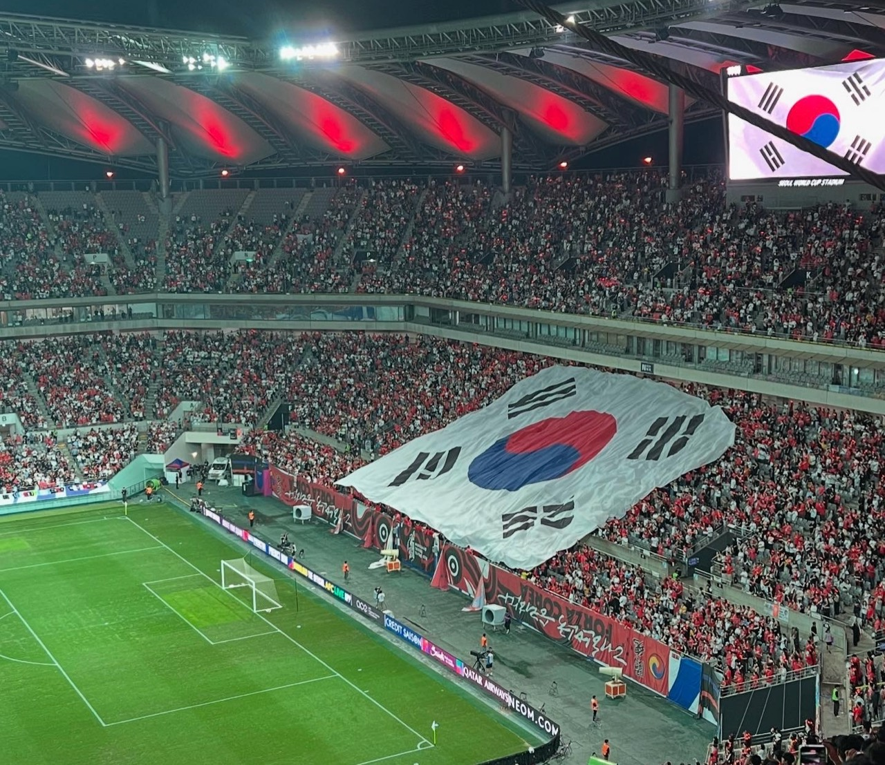
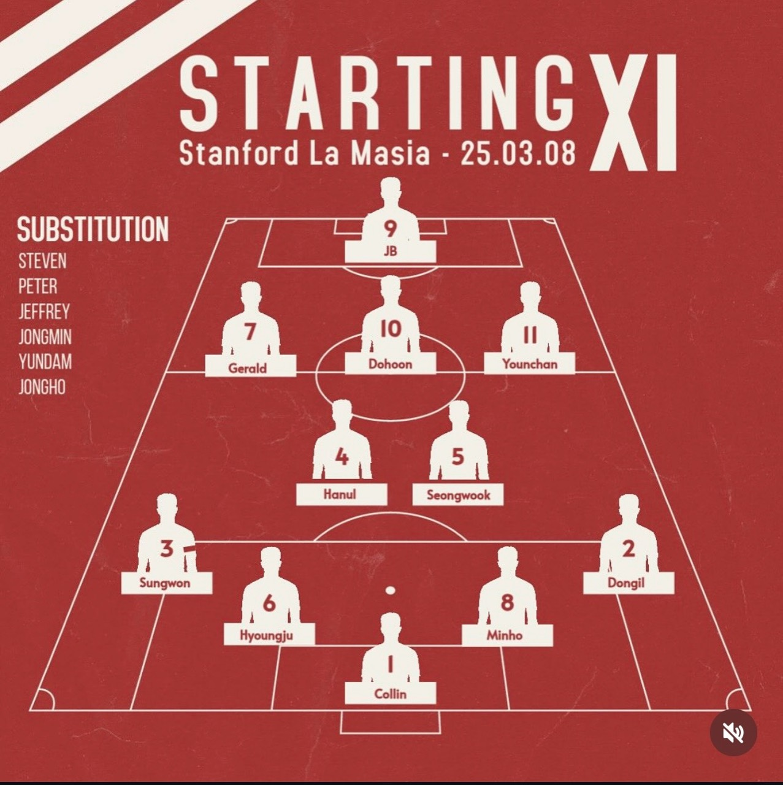
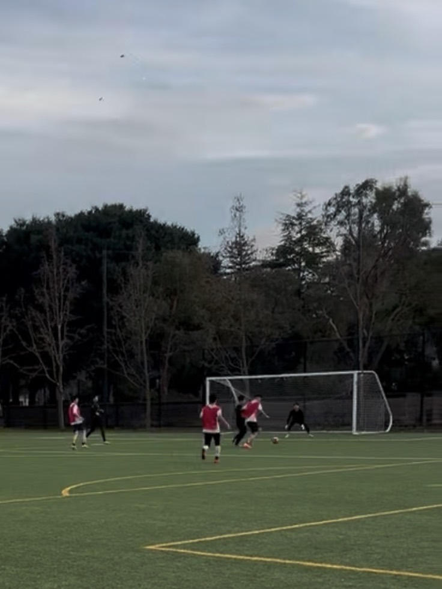
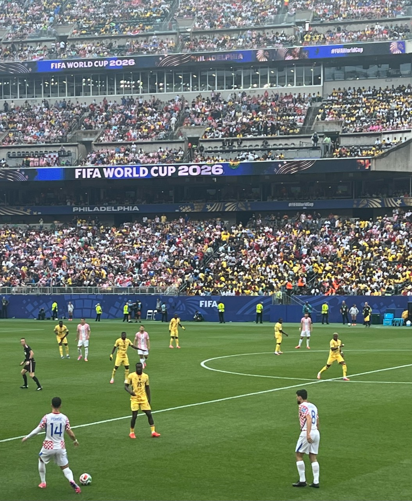
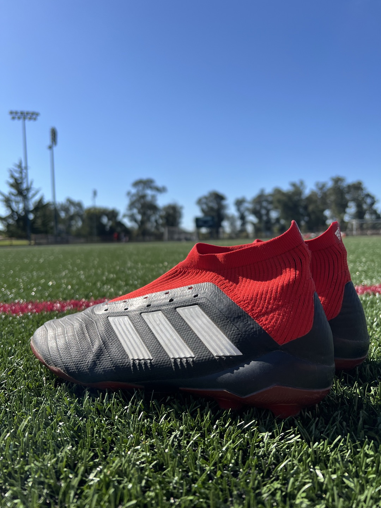
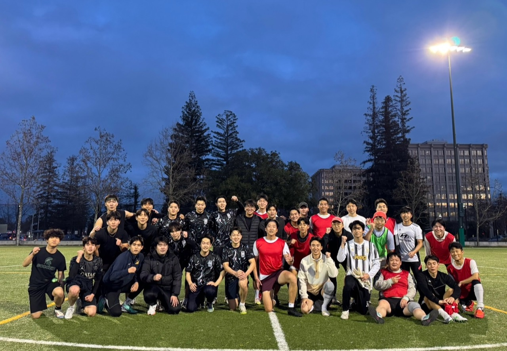
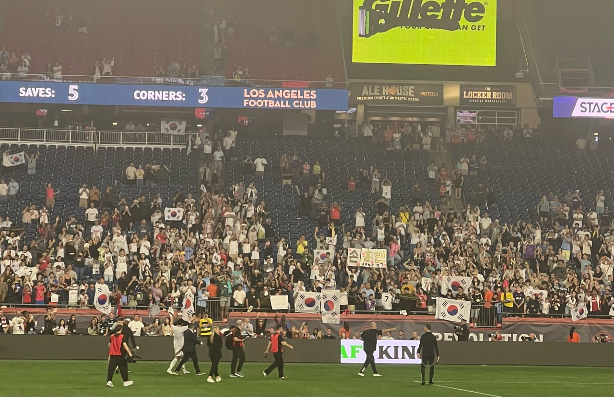
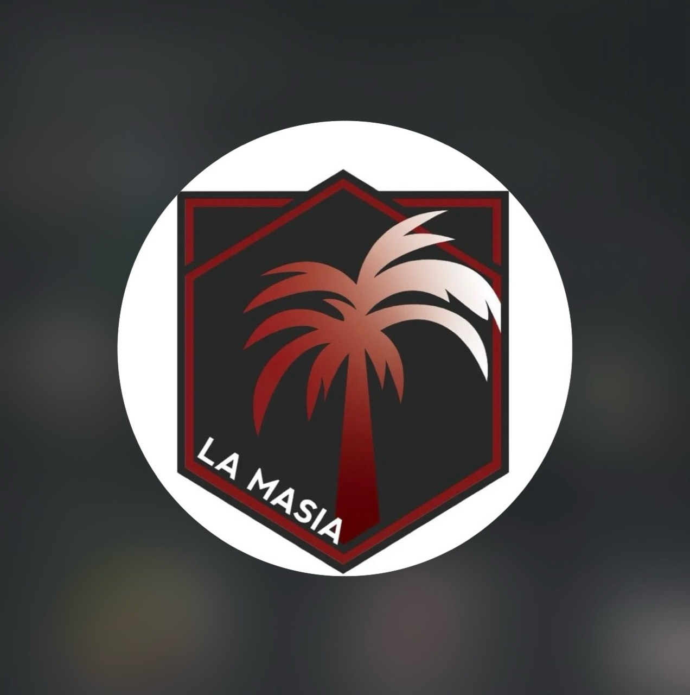
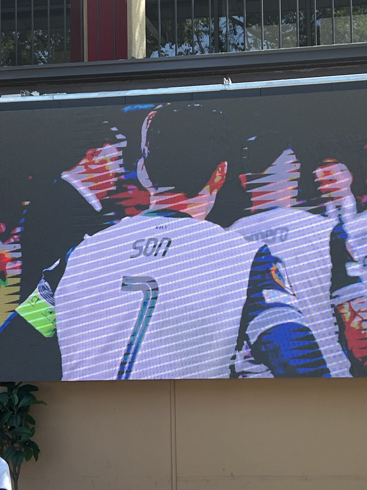

Back in elementary school, my dream was to become the president of FIFA (a career plan I've since reconsidered ). Soccer was also my first introduction to international relations. I learned about countries through their national teams, and before long, I knew the names and flags of FIFA's 200-plus member associations by heart. This led me to become curious about their histories, cultures, and politics. In many ways, I trace my academic interests back to my childhood love of soccer.
I've always loved playing soccer as much as watching it. In college, I organized intramural teams and helped found the Stanford La Masia club with friends, bringing together undergraduate and graduate students on the field (the club is still going strong!). These days, I enjoy pickup soccer, indoor futsal, and volleyball. If you ever want to play, watch, or just chat about soccer, please reach out!
-

Seoul World Cup Stadium, 2024 -

Starting 11 as a striker -

Me about to score the first goal ever for my club -

Philadelphia Stadium, 2026 
-

Stanford, 2025 -

Gillette Stadium, 2025 -

Stanford La Masia Club -

My football hero